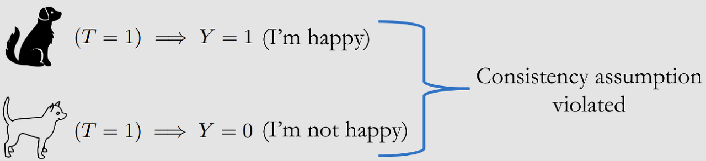
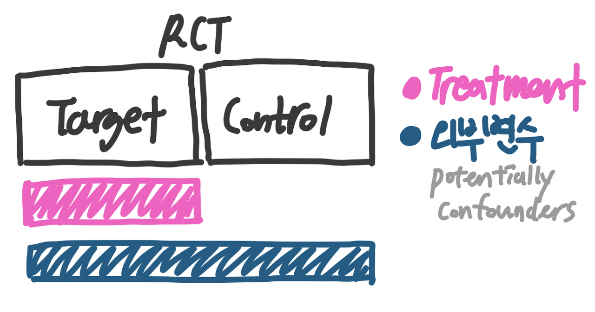
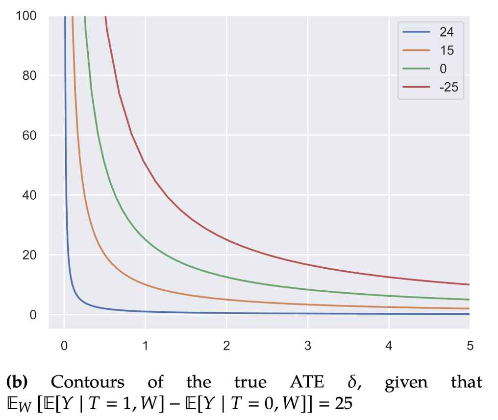
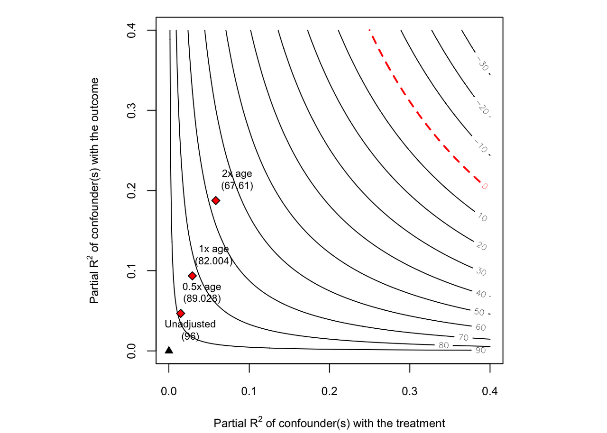
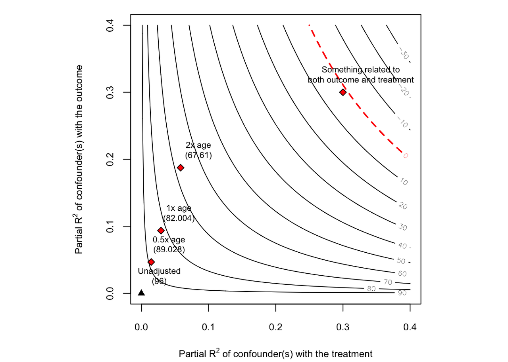

안녕하세요, 가짜연구소 Causal Inference 팀의 최은희, 김상돈입니다.
Introduction to Causal Inference 강의의 여덟번째 챕터이며, 해당 챕터에서 다루는 내용은 아래와 같습니다.
강의 영상 링크 : https://youtu.be/IXNMYqUsBBQ
작성된 내용 중 개선점이나 잘못된 부분이 있다면 댓글로 알려주세요!
Contents
- Overview
- Potential Outcomes, ATE 리마인드
- Bounds
- Observational-Counterfactual Decomposition
- No-Assumptions Bound
- Monotone Treatment Response (MTR)
- Monotone Treatment Selection (MTS)
- Optimal Treatment Selection (OTS)
- Sensitivity Analysis
- Linear Single Confounder
- Towards More General Settings
Overview
- Potential outcomes
- 실제 비즈니스 문제를 해결할 때 우리가 가진 Control group을 활용하여 관측되지 않은 Counterfactual(Unobserved confounders)과 최대한 같아지게 해야함
- 인과추론의 Consistency 원칙 (동일 T의 경우 그에 대한 결과도 동일해야함)Potential Outcomes
- 하얀 생쥐의 경우 Consist하지 않고 Counterfactual함 (이런 경우가 바로 unobserved confounding factors)

2. ATE에 대해 다시 한번 짚어보자.
\(\mathbb{E}[Y(1)-Y(0)]=\mathbb{E}_W[\mathbb{E}[Y\,|\, T=1,W]-\mathbb{E}[Y\,|\, T=0,W]]\)
- What is ATE(Average Treatment Effect)?
- 일반적으로 A/B testing에서 사용되는 분석 방법. 개인의 인과효과를 평균을 내어 집단 레벨에서 설명. 보통의 경우 교란변수(Confounders) \(W\)가 관측될 경우 처치 \(T\)(treatment)와 결과 \(Y\)에 대한 인과를 아래와 같은 ATE 식을 기반으로 설명할 수 있음
- 위 ATE식이 성립 가능한 경우: Confounder가 모든 그룹에 동일하게 작용할때 두 그룹에 Confounding factors가 동질하게 작용하기 위해선? RCT를 통해 가능!

- 하지만 ATE의 경우 Outlier에 취약한 단점 또한 있음
- e.g. 타겟군과 대조군의 매출 비교 진행 시, 만약 대조군에 타겟군의 구매액을 합친 수준의 핵과금러가 한 명이라도 존재한다면?

- Identify a point [Identification]
- 모든 변수가 관측가능하다고 강한 가정을 한다면, 우리는 포인트가 되는 지점을 명확히 알 수 있을 것이다.
3. 만약 관측 불가(Unobserved Confounders)한 \(U\)를 발견하였을땐 어떡해야 할까?
- 사실 관측 불가한 \(U\)는 거의 모든 연구에서 고려해야할 사항
\(\begin{aligned}\mathbb{E}[Y(1)-Y(0)] &=\mathbb{E}_W,_U[\mathbb{E}[Y\,|\, T=1,W,U]-\mathbb{E}[Y\,|\, T=0,W,U]] \\ &\approx \mathbb{E}_W[\mathbb{E}[Y\,|\, T=1,W]-\mathbb{E}[Y\,|\, T=0,W]]\end{aligned}\)
- Identify an interval (Partial identification)
- ATE를 활용하여 최대한 근사치를 찾아보자
- 한가지 가정을 내리는 것이 아닌 가정의 범위를 넓혀 [근사치], 즉 그 간격(Interval)을 추정해보자

💡 ‘No Unobserved Confounding’ is Unrealistic.
현실 세계에서 모든 변수를 관측한다는 것은 불가능하다.
| 1 | No-Assumptions Bound | 가정이 없다. | Interval 매우 김 |
|---|---|---|---|
| 2 | Monotone Treatment Response | 처치(\(T\))는 언제나 결과(\(Y\))에 영향을 준다. | |
| 3 | Monotone Treatment Selection | 처치(\(T\))를 받은 군이 언제나 좋은 Potential Outcomes을 도출한다. | |
| 4 | Optimal Treatment Selection | 개개인은 언제나 최적의 처치(\(T\))를 받는다. | - Interval 짧아짐 |
👉 가정의 정도가 올라갈수록 현실 세계에서 발생되는 현상에 대한 설명력이 떨어진다는 한계점이 존재한다. 강한 가정 아래에서 나온 결론일수록 그 결과의 신뢰성을 떨어진다는 뜻. (“The credibility of inference decreases with the strength the assumptions maintained.” Manski)
👉 Interval이 짧아질수록 결과에 대한 신뢰도도 떨어질 수 있음 (개개인이 언제나 최적의 처치를 받을 확률은?)
Bounds
💡 지금부터 관측이 어려운 변수들의 범위를 좁히는 방법론들에 대해 알아봐보자.
Observational-Counterfactual Decomposition
이쯤에서 다시보는 ATE. \(\mathbb{E}[Y(1)-Y(0)]=\mathbb{E}_W[\mathbb{E}[Y\,|\, T=1,W]-\mathbb{E}[Y\,|\, T=0,W]]\)
- Observational : 관측되는 부분
- Counterfactual : 가정을 통해 범위를 좁히는 부분

💡Observational-Counterfactual Decomposition
\(\begin{aligned}\mathbb{E}[Y(1)-Y(0)] = \pi\mathbb{E}[Y|T=1] + (1-\pi)\mathbb{E}[Y(1)|T=0] \\ -\,\pi\mathbb{E}[Y(0)|T=1] - (1-\pi)\mathbb{E}[Y|T=0] \\ where \;\; \pi \triangleq P(T=1)\end{aligned}\)
[1] No-Assumptions Bound
- 가정: 범위(Bound)에 대한 가정이 없을 때 Interval Length 구해보기
Bounded Potential Outcomes
\(Y(0)\)과 \(Y(1)\)이 \(0\)과 \(1\) 사이에 있다고 가정했을 때 \(\mathbb{E}Y(1)-Y(0)\)의 경우 음의 0과 1, 양의 0과 1 사이에 있다.
\(-1 \le \mathbb{E}[Y(1)-Y(0)] \le 1\)
이를 일반화한다면, \(\forall t, a \le Y(t) \le b\)
\[ a-b \le \mathbb{E}[Y(1)-Y(0)] \le b-a \]
- Trival length limit : \(2(b-a)\)
No-Assumptions Bound
- observational-counterfactual decomposition 와 각 방법론의 가정을 활용하여 lower bound와 upper bound를 추정하는 과정
- upper bound
- \(\mathbb{E}[Y(1)-Y(0)] \le \pi\mathbb{E}[Y|T=1]+(1-\pi)b -\pi a-(1-\pi)\mathbb{E}[Y|T=0]\)
- lower bound
- \(\mathbb{E}[Y(1)-Y(0)] \ge \pi\mathbb{E}[Y|T=1]+(1-\pi)a -\pi b-(1-\pi)\mathbb{E}[Y|T=0]\)\[ Interval\; Length = b-a \]
- upper bound
- 최초의 시작에서 범위를 반으로 줄이게 되는 것. \(2(b-a) \longrightarrow b-a\)
- 언제나 0을 포함한다.
💡 (앞으로 계속 나올) 예시
(1) Potential outcomes 가 \(0(a)\) 와 \(1(b)\) 사이에 있음
(2) \(\pi = 0.3\) \(\mathbb{E}[Y|T=1]=0.9\) \(\mathbb{E}[Y|T=0]=0.2\)
\[ -0.17 \le \mathbb{E}[Y(1)-Y(0)] \le 0.83 \]
[2] Monotone Treatment Response (MTR)
가정: 처치(T)는 언제나 결과(Y)에 영향을 준다는 가정 (Nonnegative, Nonpositive)
| Nonnegative MTR | Nonpositive MTR |
|---|---|
| \(\forall i\; Y_i(1) \ge Y_i(0)\) | \(\forall i\; Y_i(1) \le Y_i(0)\) |
| \(0 \le \mathbb{E}[Y(1)-Y(0)] \le 0.83\) | \(-0.17 \le \mathbb{E}[Y(1)-Y(0)] \le 0\) |
- Nonnegative MTR (lower bound 무시)
- 처치는 언제나 결과에 긍정적인 영향을 준다.
\(\forall i\; Y_i(1) \ge Y_i(0)\)
- ITE (Individual Treatment Effect) \(a - b \ge 0\)
- ATE (Average Treatment Effect) \(\mathbb{E}[Y(1)-Y(0)] \ge 0\)
- Nonpositive MTR (upper bound 무시)
- 처치는 언제나 결과에 부정적인 영향을 준다.
\(\forall i\; Y_i(1) \le Y_i(0)\)
- ITE (Individual Treatment Effect) \(a - b \le 0\)
- ATE (Average Treatment Effect) \(\mathbb{E}[Y(1)-Y(0)] \le 0\)
[3]Monotone Treatment Selection (MTS)
가정: 처치(\(T\))를 받은 타겟군(Target)이 대조군(Control)보다 언제나 좋은 Potential Outcomes 도출한다. (MTS Upper Bound)
- \(\mathbb{E}[Y(1)|T=1] \ge \mathbb{E}[Y(1)|T=0]\)
- \(\mathbb{E}[Y(0)|T=1] \ge \mathbb{E}[Y(0)|T=0]\)
\[ \mathbb{E}[Y(1)-Y(0)] \le \mathbb{E}[Y|T=1] - \mathbb{E}[Y|T=0] \]
💡 그러면 이제 MTS Upper Bound에 nonnegative MTR을 합쳐보자.
이를 통해 우리는 더 좁은 Interval length를 겟할 수 있다!
| No Assumptions | \(-0.17 \le \mathbb{E}[Y(1)-Y(0)] \le 0.83\) |
|---|---|
| MTS Upper Bound | \(-0.17 \le \mathbb{E}[Y(1)-Y(0)] \le 0.7\) |
| nonnegative MTR | \(0 \le \mathbb{E}[Y(1)-Y(0)] \le 0.83\) |
| do combine. (MTS + MTR) | \(0 \le \mathbb{E}[Y(1)-Y(0)] \le 0.7\) |
[4]Optimal Treatment Selection (OTS)
가정: 개개인은 언제나 그들에게 최적의 처치(Optimal Treatment)를 받는다.
💡 OTS Assumption
(1) Treatment Group (타겟군) \(T_i = 1 \Longrightarrow Y_i(1) \ge Y_i(0)\)
(2) Nontreatment Group (대조군) \(T_i = 0 \Longrightarrow Y_i(0) > Y_i(1)\)
[4-1] 방법론1
observational-counterfactual decomposition
- OTS Upper Bound 1 : \(\mathbb{E}[Y(1)|T=0] \le \mathbb{E}[Y|T=0]\)
- OTS Lower Bound 2 : \(-\mathbb{E}[Y(0)|T=1] \ge -\mathbb{E}[Y|T=1]\)
\[ Interval\; Length = \pi\mathbb{E}[Y|T=1]+(1-\pi)\mathbb{E}[Y|T=0]-a \]
| No Assumptions | \(-0.17 \le \mathbb{E}[Y(1)-Y(0)] \le 0.83\) |
|---|---|
| OTS Bound 1 | \(-0.14 \le \mathbb{E}[Y(1)-Y(0)] \le 0.27\) |
여전히 0을 포함하고 있는데…..
[4-2] 방법론2 : Bound the identifies the sign!
observational-counterfactual decomposition
- OTS Upper Bound 2 : \(\mathbb{E}[Y(1)|T=0] \le \mathbb{E}[Y|T=1]\)
- OTS Lower Bound 2 : 알아서 해보래요…
| No Assumptions | \(-0.17 \le \mathbb{E}[Y(1)-Y(0)] \le 0.83\) |
|---|---|
| OTS Bound 1 | \(-0.14 \le \mathbb{E}[Y(1)-Y(0)] \le 0.27\) |
| OTS Bound 2 | \(0.07 \le \mathbb{E}[Y(1)-Y(0)] \le 0.76\) |
| do combine | \(0.07 \le \mathbb{E}[Y(1)-Y(0)] \le 0.27\) |
Unobserved Confounding이 과연 관측 연구에만 적용되는 이슈일까?
💡 실험 연구(Experimental Study)에서 발생하는 Unobserved Confounding factors
- 관측되지 않는 교란 변수가 RCT 기반의 실험에서는 전혀 이슈가 되지 않을까?
- RCT (Randomised Controlled Trial) 랜덤화 실험 (RCT 수행 목적: 그룹의 동질성)
- 우리가 원하는 이상적인 RCT 기반 A/B test는…
- 타겟군과 대조군을 랜덤하게 나누어 동질 그룹(homogeneous group)으로 분할하고, 타겟군에만 처치(Treatment)를 진행하여 나온 값에서 대조군의 값을 차감해준 결과는 처치로 인한 결과다! \(T \longrightarrow Y\) (처치와 결과 사이에는 인과관계가 존재한다.)

- (특히 마케팅에서)인과추론을 잘 모르는 의사결정자의 흔한 반론. 원래 [상품/이벤트/기능개선/업데이트]가 이전보다 고객에게 매력적이어서 그런거 아냐?
- 흔한 분석가의 설명: 타겟군과 대조군 모두에게 동질하게 적용되는 외부변수임.
- 🤔 과연 진짜 그럴까? 의외로 날카로운 지적이었을 수도

- 논문소개. (Microsoft) Common Metric Interpretation Pitfall in A/B test 원문은 여기
💡 A/B test를 진행할 때 반드시 아래 4가지를 확인해야 함
(1) Data Quality : 활용된 데이터가 신뢰할만한가? e.g. 타겟군과 대조군의 동일한 모집단에서 랜덤 샘플링되었는지.
(2) OverallEvaluation Criteria : 처치가 성공적이었는지, 성공했다면 어느 정도의 효과였는지, 그 효과가 통계적으로 유의한지
(3) Guardrail : 실험에 영향을 주는 교란은 어느 정도였는가 (전사적으로 영향을 받으면 안되는 지표)
(4) Local Feature and Diagnostic : 유저의 액션을 세밀한 수준에서 분석하여 처치의 성공 여부와 교란 변수의 영향 정도를 파악
- 사례1. Counfounding factor - Metric Sample Ratio Mismatch(e.g.)
- 링크 이동 방법에 따른 유저 경험 최적화
- 링크를 새로운 탭에서 띄우는 것이 홈페이지 로드 타임을 증가시켰다 (?)
- 사례1. Counfounding factor - Metric Sample Ratio Mismatch(e.g.)
| 가설 | 결과 (페이지 로드 수) | |
|---|---|---|
| 타겟군 | MSN 홈페이지에서 클릭된 어느 링크든, 새로운 탭으로 페이지가 뜬다. | ~8.4M |
| 대조군 | MSN 홈페이지에서 클릭된 어느 링크든, 오픈되어 있는 탭에서 링크로 이동된다. | ~9.2M |
결론: 실험군(타겟군)에서 페이지 로드 타임이 약 8.32% 증가했다. -> 기대 이상의 큰 증가
🌟 Confounding factor
홈페이지 탭이 미리 켜져 있어 reload하지 않아도 되는 상황
대조군의 경우 브라우저에 남은 홈페이지 캐시
💡 이런 요인들을 어떻게 발견 해야할까?
비율 지표를 분해하여 어느 부분에서 차이가 발생하는지 파악
비율 mismatch에 영향을 받지 않는 실험군, 대조군 간의 동등하게 비교할 수 있는 subset을 찾아서 신뢰 가능한 결과를 분석
- 사례2. Counfounding factor - Novelty and Primacy Effects
- (e.g.) CRM측면에서의 각 세그먼트 별 처치에 따른 효과 측정
- 그룹 A의 처치 효과가 그룹 B의 처치 효과보다 좋았다(?)
| 그룹 A | 그룹 B | |
|---|---|---|
| 처치 효과 | (처치군이 대조군에 비해) + 126% 상승 | (처치군이 대조군에 비해) + 108% 상승 |
여기서 낼 수 있는 결론: 그룹 A가 CRM 측면에서 그룹 B보다 더 좋은 세그먼트다. 그룹 A를 중심으로 한 전략을 수립해보자(?)


🌟 Confounding factor - 그룹 A에서의 Novelty effect
- Novelty effect : 긍정적인 효과가 단기간 혹은 초반에만 발생하고, 기간이 길어질수록 그 효과가 나타나지 않을 때 (초두효과)
- Primacy effect : 초반에는 유저의 반응이 극적이지 않지만, 시간이 지날수록 user learning이 발생하여 처치 최적화가 잘 이루어질때
💡 이런 요인들을 어떻게 발견 해야할까?
(1) 처치 효과를 다양한 세그먼트로 쪼개어 결과를 확인해본다.
(2) 처치의 효과를 일별로 쪼개어 확인해본다.
(3) 실험의 기간을 늘려 장기적으로 확인해본다.
- 결론
- 우리가 진행한 테스트 설계가 잘되어있다는 굳은 믿음에서 벗어나 결과를 주어진 리소스 안에서 최대한 비판적으로 해석해야한다.
- A/B test를 진행할 때 발생할 수 있는 교란 변수의 범위를 정한다 하더라도 세부적인 변수들을 모두 파악하기란 힘들다. 하지만 위 논문에서 소개한대로 여러 Metric에 대해 정의를 진행하고 경험적으로 쌓인 발생 가능한 변수들에 대한 관리 시스템을 잘 구축한다면 더 발전된 추론을 할 수 있을 것이다.
- A/B test 분석을 진행하는 분석가의 도메인에 대한 이해도, 사전 지식이 중요할 수 있다. 도메인 지식 정도에 따라 추측할 수 있는 교란 변수의 범위도 넓어질 수 있을 것이다.
Sensitivity analysis
일반적으로 관찰 데이터로 인과추론 분석을 할 때에는 관측되지 않은 교란 요인이 없다는 가정 하에서 분석을 진행합니다. 일반적으로 이러한 가정은 만족될 수 없습니다. 따라서 가정이 위반되었을 때, 인과 관계에 미치는 영향을 정량적으로 확인하는 절차, 즉 강건성을 확인하는 절차가 필요합니다. 이것을 측정하기 위해 다음과 같은 질문을 해볼 수 있습니다.
관찰 데이터로 추정한 인과효과를 \(0\)으로 만들기 위해서 관찰되지 않은 교란요인이 \(T\)와 \(Y\)에 얼마나 많은 영향을 끼쳐야 하는가? 민감도분석은 이러한 질문에 답을 하기 위한 정량적인 분석을 수행하는 것입니다.
Sensitivity Basiscs in Linear Setting
먼저 가장 간단한 세팅으로 linear setting을 고려해보겠습니다. 오른쪽 그림을 보면 \(W\)는 관찰된 교란요인이고, \(U\)는 관찰되지 않은 교란요인을 나타냅니다. \(U\)의 효과를 무시했을 때, 나타나는 편향은 어느 정도일까요?

linear setting에서 \(T\)와 \(Y\)는 다음과 같이 표현할 수 있습니다.
\[\begin{aligned} &T := \alpha_w W + \alpha_u U \\ &Y := \beta_w W + \beta_u U + \delta T \\ \end{aligned}\]
먼저 \(T, \, U\)가 주어졌을 때를 가정하면, ATE는 \(\delta\)로 계산됩니다.
\[E[Y(1) - Y(0)] = E_{W, U}[E[Y|T=1,W,U] - E[Y|T=0, W, U]] = \delta\]
하지만 \(U\)는 관찰할 수 없는 교란요인이므로, 실제로는 \(W\)만 조정할 수 있습니다. 따라서 \(U\)의 영향으로 confounding bias가 \(\frac{\beta_u}{\alpha_u}\) 만큼 발생합니다.
\[ E_W[E[Y|T=1, W]-E[Y|T=0, W]] - E_{W,U}[E[Y|T=1, W, U] - E[Y|T=0, W, U]] = \frac{\beta_u}{\alpha_u} \]
\(proof\)
\[ \begin{aligned} E_W[E[Y|T=t, W]] &= E_W[E[\beta_w W + \beta_u U + \delta T|T=t, W]] \\ &= E_W[\beta_w W + \beta_u E[U|T=t, W] + \delta t] \\ \newline &=E_w \left[\beta_w W + \beta_u \frac{t-\alpha_w W}{\alpha_u} + \delta t\right] \\ &=E_w \left[\beta_w W + \frac{\beta_u}{\alpha_u}t - \frac{\beta_u \alpha_w}{\alpha_u}W + \delta t\right] \\ &=\beta_w E[W] + \frac{\beta_u}{\alpha_u}t - \frac{\beta_u \alpha_w}{\alpha_u}E[W] + \delta t \\ &=\left(\delta + \frac{\beta_u}{\alpha_u}\right)t + \left(\beta_w - \frac{\beta_u \alpha_w}{\alpha_u}\right)E[W] \end{aligned} \]
\[ \begin{aligned} &E_W[E[Y|T=1, W]-E[Y|T=0, W]] \\ &= \left(\delta + \frac{\beta_u}{\alpha_u}\right)(1) + \left(\beta_w - \frac{\beta_u \alpha_w}{\alpha_u}\right)E[W] - \left[\left(\delta + \frac{\beta_u}{\alpha_u}\right)(0) + \left(\beta_w - \frac{\beta_u \alpha_w}{\alpha_u}\right)E[W]\right] \\ &= \delta + \frac{\beta_u}{\alpha_u} \end{aligned}\]
\[ \begin{aligned} Bias &= E_W[E[Y|T=1, W]-E[Y|T=0, W]] \\ &- E_{W,U}[E[Y|T=1, W, U] - E[Y|T=0, W, U]] \\ &= \delta + \frac{\beta_u}{\alpha_u} - \delta \\ &= \frac{\beta_u}{\alpha_u} \end{aligned} \]
Sensitivity Contour Plots
true ATE인 \(\delta\)는 아래와 같이 다시 정리할 수 있습니다.
\[ E_W[E[Y|T=1, W]-E[Y|T=0, W]] = \delta + \frac{\beta_u}{\alpha_u} \]
\[\begin{aligned} \delta = E_W[E[Y|T=1, W]-E[Y|T=0, W]] - \frac{\beta_u}{\alpha_u} \end{aligned}\]
식을 한번 더 해석해보면 다음과 같습니다.
- \(U\)에 의해 생기는 bias인 \(\frac{\beta_u}{\alpha_u}\)이 크다면 \(E_W[E[Y|T=1, W]-E[Y|T=0, W]]\)는 상쇄되고, \(\delta\)는 \(0\)에 가까워짐
- \(U\)에 의해 생기는 bias인 \(\frac{\beta_u}{\alpha_u}\)이 작다면 \(E_W[E[Y|T=1, W]-E[Y|T=0, W]]\)는 크게 변화하지 않고, \(\delta\)는 \(E_W[E[Y|T=1, W]-E[Y|T=0, W]]\)과 큰 차이가 없음
이에 대해서 그래프로 나타내보면 다음과 같습니다.

그림은 (\(\frac{1}{\alpha_u}\), \(\beta_u\))에 따른 \(\delta\)의 변화 그래프입니다. 먼저 green curve 값을 해석해보겠습니다. \(E_W[E[Y|T=1, W]-E[Y|T=0, W]]=25\)로 고정했을 때, \(\frac{1}{\alpha_u} = 1\)이고, \(\beta_u = 25\)라면 \(\delta = 0\)이 됩니다. 따라서 green curve일 경우 (\(\frac{1}{\alpha_u}\), \(\beta_u\))의 변화에 따른 \(\delta = 0\) 일 때에 해당하는 곡선입니다. \(\delta = 0\)이라는 의미는 관찰되지 않은 교란 요인 \(U\)에 의해 \(E_W[E[Y|T=1, W]-E[Y|T=0, W]]\)을 전부 설명한다는 의미와 같으며, \(U\)는 강력한 교란요인이라고 볼 수 있습니다. 결론적으로 green curve에 가까워지거나 혹은 green curve를 넘어설 경우 교란요인에 의해 영향을 많이 받으므로, 강건성이 떨어진다고 볼 수 있습니다. 정리하면, 관찰되지 않은 교란요인이 treatment와 outcome에 대해 미치는 영향의 방향은 알 수 없습니다. 이에 따라 민감도 분석에서는 관찰되지 않은 교란요인의 **크기**를 고려합니다. 위의 그림 예시처럼 민감도 분석을 통해 추정된 효과를 없앨 정도로 추정량을 변경하려면 관찰되지 않은 교란요인의 크기가 어느 정도여야 하는지를 확인할 수 있고, 도메인 지식을 활용하여 추정된 효과의 강건성을 주관적으로 결정할 수 있습니다.
More General Settings
강의에서는 더 일반적인 민감도 분석 방법에 대해 소개합니다.
Assess-ing Sensitivity to an Unobserved Binary Covariate in an Observational Study with Binary Outcome(1983)
Making sense of sensitivity: extending omitted variable bias(2020)
이 중 두 번째 논문에 대해서 짧게 정리했습니다.
이 논문에서는 partial \(R^2\)를 활용해서 linear regression에서 민감도분석을 수행하고 리포팅하기 위한 새로운 방식을 제안합니다.
**주요 기여사항**
1. Robustness value 개발
2. partial \(R^2\)를 활용한 민감도분석 툴 개발
3. extreme scenario에 대한 분석 그래프 개발
해당 논문 저자가 개발한 툴은 R, Python, Stata 등에서 이용할 수 있습니다.
- python :
- R : sensemakr
논문에서 나오는 example이 직관적이지 않아서 다른 블로그 예시를 참고했습니다.
- 참고 : https://matteocourthoud.github.io/post/ovb/
- 교육기간과 임금 사이의 관계에 관심이 있음
- 교육기간과 임금 사이에는 많은 unobserved confounder가 존재함
- 예시를 위해 unobserved confounder로 ability가 있다고 가정
- ability는 omitted variable이지만 education과 wage에 영향을 미친다는 것을 알고 있다고 가정함

library(sensemakr)
library(tidyverse)#setwd("./posts/2023-02-07-sensitivity-analysis")
df <- read.csv("ex_data.csv")[, -1] %>%
mutate(gender = as.factor(gender))
df %>% head(2)
age gender education wage
1 62 male 6 3800
2 44 male 8 4500fit <- lm(wage ~ ., df)
summary(fit)
Call:
lm(formula = sleep_total ~ ., data = dat)
Residuals:
Min 1Q Median 3Q Max
-4.7435 -2.6495 0.0466 1.3376 7.0845
Coefficients:
Estimate Std. Error t value Pr(>|t|)
(Intercept) 12.618464 0.862433 14.631 4.59e-11 ***
brainwt -9.246523 14.305157 -0.646 0.527
bodywt -0.009216 0.013960 -0.660 0.518
---
Signif. codes: 0 ‘***’ 0.001 ‘**’ 0.01 ‘*’ 0.05 ‘.’ 0.1 ‘ ’ 1
Residual standard error: 3.476 on 17 degrees of freedom
Multiple R-squared: 0.4766, Adjusted R-squared: 0.4151
F-statistic: 7.741 on 2 and 17 DF, p-value: 0.004072회귀분석 결과, 추정된 ATE는 약 96으로, 교육 기간이 한 단위 증가할 때, 임금은 약 96 증가합니다(education = 95.94). 하지만 실제로는 관찰되지 않은 교란요인(ability)이 존재하므로, 해당 추정량은 편향 추정량입니다(해당 데이터는 가상의 데이터이므로, 실제로는 수 많은 교란요인이 존재합니다).
관찰되지 않은 교란요인의 크기에 따라 추정된 ATE의 강건성을 분석하기 위해 민감도 분석을 수행해보겠습니다. sensemakr 패키지의 sensemakr() 함수를 이용해서 간단히 할 수 있습니다.
sens <- sensemakr(model = fit, treatment = "education")
summary(sens)
Sensitivity Analysis to Unobserved Confounding
Model Formula: wage ~ age + gender + education
Null hypothesis: q = 1 and reduce = TRUE
-- This means we are considering biases that reduce the absolute value of the current estimate.
-- The null hypothesis deemed problematic is H0:tau = 0
Unadjusted Estimates of 'education':
Coef. estimate: 95.9437
Standard Error: 38.7521
t-value (H0:tau = 0): 2.4758
Sensitivity Statistics:
Partial R2 of treatment with outcome: 0.1176
Robustness Value, q = 1: 0.3044
Robustness Value, q = 1, alpha = 0.05: 0.0627
Verbal interpretation of sensitivity statistics:
-- Partial R2 of the treatment with the outcome: an extreme confounder (orthogonal to the covariates) that explains 100% of the residual variance of the outcome, would need to explain at least 11.76% of the residual variance of the treatment to fully account for the observed estimated effect.
-- Robustness Value, q = 1: unobserved confounders (orthogonal to the covariates) that explain more than 30.44% of the residual variance of both the treatment and the outcome are strong enough to bring the point estimate to 0 (a bias of 100% of the original estimate). Conversely, unobserved confounders that do not explain more than 30.44% of the residual variance of both the treatment and the outcome are not strong enough to bring the point estimate to 0.
-- Robustness Value, q = 1, alpha = 0.05: unobserved confounders (orthogonal to the covariates) that explain more than 6.27% of the residual variance of both the treatment and the outcome are strong enough to bring the estimate to a range where it is no longer 'statistically different' from 0 (a bias of 100% of the original estimate), at the significance level of alpha = 0.05. Conversely, unobserved confounders that do not explain more than 6.27% of the residual variance of both the treatment and the outcome are not strong enough to bring the estimate to a range where it is no longer 'statistically different' from 0, at the significance level of alpha = 0.05.Unadjusted Estimates of ’ education ’:는 기존 회귀분석 결과와 같습니다. Sensitivity Statistics:을 보면 partial \(R^2\)와 Robustness Value(RV) 등이 표기됩니다. 또한 해당 지표에 대한 해석도 함께 제시됩니다.
- \(RV_1\) : 측정되지 않은 교랸요인이 교육과 임금의 잔차 변동의 30.44%를 설명한다면 추정량을 0으로 만들기 충분함 or 충분하지 않음
30.44%가 충분한지 or 충분하지 않은지는 분석가의 판단에 의존합니다. 또는 benchmark_covariates 옵션을 통해 관찰된 \(X\) 변수와 비교함으로써 추가적인 해석을 해볼 수 있습니다.
Robustness value
\(RV_q\)는 추정된 treatment effect의 약 \((100 \times q)\)%를 설명하기 위해서 unobserved confounder의 효과가 얼마나 강력해야 하는지를 설명하는 지표입니다.

\(Z \sim Y\)의 영향과 \(Z \sim D\)의 영향이 동일하다고 가정할 경우 \(RV_q\)를 유도할 수 있습니다.
\(R^2_{Y\sim Z|X, D} = R^2_{D\sim Z|X}=RV_q\)일 때,
\[ \begin{aligned} RV_q = \frac{1}{2}(\sqrt{f^4_q + 4f^2_q - f^2_q}), \quad f = q\cdot|\frac{t}{df}|\,\, (cohen's\,f) \end{aligned} \]
- \(RV_q \approx 1\)일 경우 \(Z\)가 \(Y\)와 \(D\)의 모든 잔차 변동을 설명한다는 것을 의미함
- strong confounder
- \(RV_q \approx 0\)일 경우 \(Z\)가 \(Y\)와 \(D\)의 모든 잔차 변동을 설명하지 못한다는 것을 의미함
- weak confonder
Sensitivity Contour plot
Robustness Value는 \(R^2_{Y\sim Z|X, D} = R^2_{D\sim Z|X}\)일 때를 가정하므로, \(R^2_{Y\sim Z|X, D} \neq R^2_{D\sim Z|X}\)일 경우 그래프를 통해 대략적인 추이를 파악해볼 수 있습니다.
plot(sens, xlab = "Partial R^2 of ability with education",
ylab = "Partial $R^2$ of ability with wage")
그래프를 보면 Unadjusted는 관찰되지 않은 교란요인(ability)가 영향을 주지 않을 때를 의미합니다. 즉, 회귀분석 결과와 동일합니다. 우측 상단으로 갈수록 관찰되지 않은 교란요인의 효과가 증가하고, 빨간색 dot line에 도달했을 때, \(\hat{\beta}_{education} = 0\)이 됩니다.
그래프를 보면 빨간색 dot line 위에 있는 값으로 \(R^2_{Y \sim Z|D,X} = 0.3\), $ R^2_{D \sim Z|X} = 0.3$ 정도로 생각해볼 수 있습니다. 논문에서 유도한 공식을 이용해서 bias 추정치를 구해보고 확인해보겠습니다.
논문에서 partial \(R^2\)를 이용해서 유도한 bias 추정치는 다음과 같습니다.
\[ |\hat{bias}| = \sqrt{\frac{R^2_{Y \sim Z|D,X} \cdot R^2_{D \sim Z|X}}{1 - R^2_{D \sim Z|X}}} \cdot \frac{sd(Y^{\perp X, D})}{sd(D^{\perp X})} \]
R_YZ = 0.3
R_DZ = 0.3
DperpX <- lm(education ~ age + gender, df)$residuals
YperpXD <- lm(wage ~ ., df)$residuals
bias <- sqrt((R_YZ*R_DZ/(1 - R_DZ)))*(sd(YperpXD)/sd(DperpX))
95.94 - bias
[1] 1.697537\(\hat{\beta}_{education} = 95.94\)이고, \(|\hat{bias}| = 94.24\)이므로, 대략 \(0\)에 가까운 것을 확인할 수 있습니다.
Sensitivity contour plot using benchmark covariates
sensitivity contour plot을 봤을 때, 관찰되지 않은 교란요인의 treatment와 outcome에 미치는 영향에 따른 bias 효과를 확인해볼 수 있지만, 실제로 이 bias가 큰지 혹은 작은지는 주관적인 판단에 의존합니다. 즉, 이전 예시에서 \(R^2_{Y \sim Z|D,X} = 0.3\), \(R^2_{D \sim Z|X} = 0.3\) 일 때, 추정된 회귀계수는 \(0\)이 되만, \(R^2_{Y \sim Z|D,X} = 0.3\), \(R^2_{D \sim Z|X} = 0.3\) 값이 큰지 혹은 작은지의 기준은 알 수 없습니다.
이러한 기준 설정의 어려움을 극복하기 위해서 관찰된 설명변수를 벤치마크하여 관찰되지 않은 교란요인이 미치는 영향의 크기를 대략적으로 추측합니다.
\[ \begin{aligned} k_D := \frac{R^2_{D \sim Z|X_{-j}}}{R^2_{D \sim X_j|X_{-j}}}, \quad k_Y := \frac{R^2_{Y \sim Z|X_{-j}, D}}{R^2_{Y \sim X_j|X_{-j}, D}} \end{aligned} \]
\(k_D \ge 1\)일 때, \(R^2_{D \sim Z|X_{-j}} \ge R^2_{D \sim X_j|X_{-j}}\)이므로 관찰되지 않은 교란요인이 사전에 지정한 설명변수 대비 Treatment에 미치는 영향이 크다는 의미로 볼 수 있습니다. \(k_Y \ge 1\)일 때도 마찬가지로 관찰되지 않은 교란요인이 사전에 지정한 설명변수 대비 반응변수에 미치는 영향이 크다는 의미로 볼 수 있습니다.
sens2 <- sensemakr(model = fit, treatment = "education",
benchmark_covariates = "age",
kd = c(0.5, 1, 2),
ky = c(0.5, 1, 2))
plot(sens2)
sensemakr() 함수에는 `benchmark_covariates` 옵션이 존재하며, \(k_D\), \(k_Y\)의 크기를 사전에 지정할 수 있습니다. 그래프를 해석해보면 관찰되지 않은 교란요인(ability)가 age의 두 배 정도의 설명력을 갖더라도, \(\hat{\beta}_{education} = 67.61\)로 값의 변화는 있지만 부호는 여전히 positive인 것을 볼 수 있습니다.
옵션을 추가할 경우 해당 plot에서 통계적 유의성 또한 체크해볼 수 있습니다.
plot(sens2, sensitivity.of = "t-value")
통계적 유의성을 보면 관찰되지 않은 교란요인(ability)가 \(1 \times age\)보다 약간 큰 정도의 설명력을 갖는다면, \(\hat{\beta}_{education}\)이 통계적으로 유의하지 않게 바뀔 수 있다는 것을 의미합니다.
plot(sens2)
add_bound_to_contour(r2dz.x = 0.3,
r2yz.dx = 0.3,
bound_label = "Something related to\nboth outcome and treatment")
추가적으로 임의로 partial \(R^2\)를 설정해서 점을 찍어볼 수도 있습니다.
Sensitivity plots of extreme scenarios
extreme scenario는 outcome의 거의 모든 잔차 변동을 관찰되지 않은 교란요인이 설명한다는 의미로, \(R_{Y \sim Z|D,X} = 1\)을 의미합니다(옵션으로 \(0.75, 0.5\)일 때도 함께 제시됨). 그래프를 활용하여 extreme scenario일 때, \(R^2_{D \sim Z|X}\)의 변화에 따라 추정된 회귀계수가 어떻게 바뀌는지를 시각화해볼 수 있습니다.
sens3 <- sensemakr(model = fit, treatment = "education",
benchmark_covariates = "age",
kd = c(1, 2, 3, 4),
ky = c(1, 2, 3, 4))
plot(sens3, type = "extreme", lim = 0.5)
result <- plot(sens3, type = "extreme", lim = 0.5)
result$scenario_r2yz.dx_1[117:119,]
r2dz.x r2yz.dx adjusted_estimate
117 0.116 1 0.7348541
118 0.117 1 0.2712232
119 0.118 1 -0.1912156- x axis : \(R^2_{D \sim Z|X}\)
- y axis : \(\hat{\tau} = \hat{\tau}_{res} - \hat{bias}\)
- line : \(R^2_{Y \sim Z|D,X}\)
그래프를 보면 빨간색 dot line은 추정된 회귀계수가 0이 되는 경우에 해당합니다. solid line은 \(R^2_{Y \sim Z|D,X} = 1\)일 때에 해당합니다. \(R^2_{Y \sim Z|D,X} = 1\)일 때, 추정된 회귀계수가 0이 되기 위해서는 \(R^2_{D \sim Z|X} \approx 0.117\) 정도 되어야 하는 것을 확인할 수 있습니다.
또한, 왼쪽 하단에 빨간색 vertical line은 benchmark로 설정한 변수에 비해 confounder가 몇 배 더 강력한지를 나타내는 것으로 `kd = c(0.5, 1, 2)` 옵션에서 설정한 것과 같습니다.
관찰된 설명변수 age가 education에 미치는 효과에 비해서 관찰되지 않은 교란요인이 education에 미치는 효과가 네 배 정도 클 때, \(\hat{\beta}_{education} \approx 0\)이 되는 것을 확인할 수 있습니다.
상식적으로 교육기간과 나이는 충분한 양의 상관관계가 존재한다고 생각할 수 있습니다. 따라서 관찰된 설명변수 age가 education에 미치는 효과에 비해서 관찰되지 않은 교란요인이 education에 미치는 효과가 네 배정도 클 때, \(\hat{\beta}_{education} \approx 0\)이 된다는 의미는 ATE 추정량이 충분히 신뢰할 수 있고, 관찰되지 않은 교란요인에 강건하다는 것을 의미한다고 볼 수 있습니다(주관적인 해석).
pywhy tutorial
import dowhy
from dowhy import CausalModel
import pandas as pd
import numpy as np
import dowhy.datasets
import os
from dowhy import CausalModeldat = pd.read_csv("posts/2023-02-07-sensitivity-analysis/ex_data.csv", index_col = 0)
dat.head()gdot = """graph[directed 1 node[id "age" label "age"]
node[id "gender" label "gender"]
node[id "education" label "education"]
node[id "wage" label "wage"]
edge[source "education" target "wage"]
edge[source "gender" target "wage"]
edge[source "age" target "wage"]]"""model = CausalModel(
data = dat,
treatment="education",
outcome="wage",
graph = gdot
)identified_estimand = model.identify_effect(proceed_when_unidentifiable=True)
print(identified_estimand)estimate = model.estimate_effect(identified_estimand,
method_name="backdoor.linear_regression")refute = model.refute_estimate(identified_estimand,
estimate,
method_name = "add_unobserved_common_cause",
simulated_method_name = "linear-partial-R2",
benchmark_common_causes = "age",
effect_fraction_on_treatment = [ 1,2,3]
)